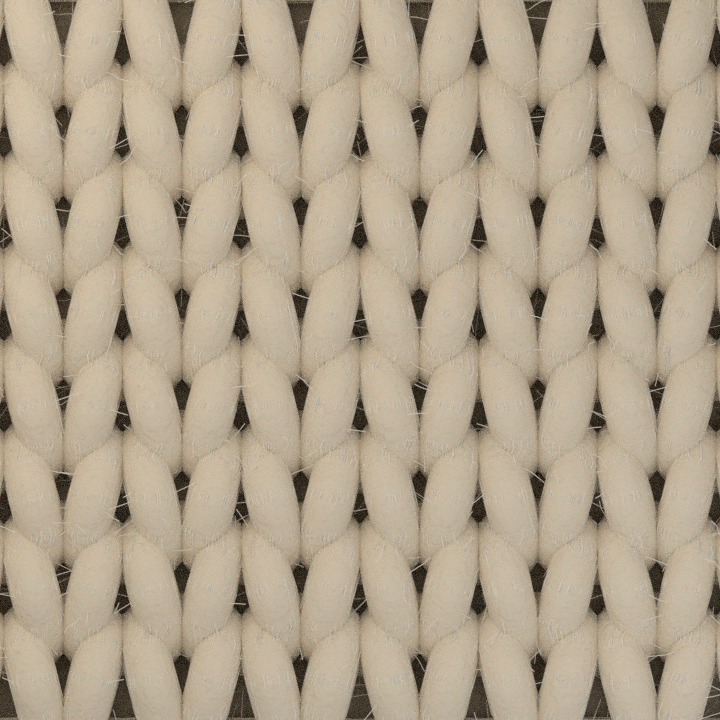

This is an actual test render from the new open-source textile pipeline, not the old photograph enlarged or repeated in squares. The engine is still being refined.
Super mega chunky · stockinette Sample 01

Visual prototype — not final
Actual Blender output
Built using TexGen for knitted yarn geometry, Blender for physical yarn and lighting, and Pillow for PNG validation. It is a test of structure and material realism.
Sample dimensions 720 × 720 px Resolution metadata 300 DPI Material Merino roving simulation Current status Under visual review Download this 720 px sample
Open image full size
This is a preview of one rendered sample , not a working 5000 px on-demand generator. The wool still needs quality improvements; no live settings, paid downloads, or render service are enabled here.